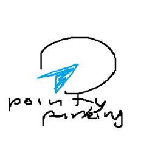

Parking Shortcuts
HRM Report Generator
Auto-read plates from parking logic
Disclaimer
I (github/erkshen) made these tools to automate/accelerate some menial processes. It is in no way an official tool for Point Parking.